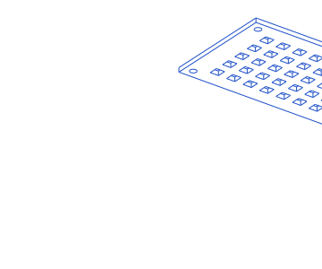
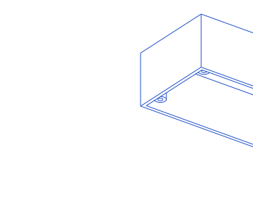
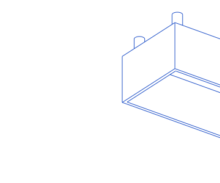
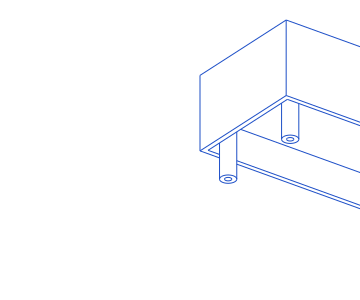
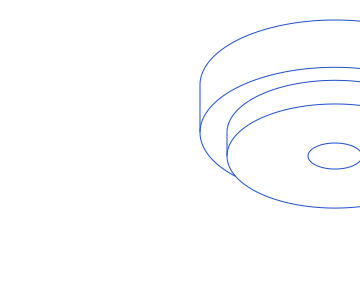
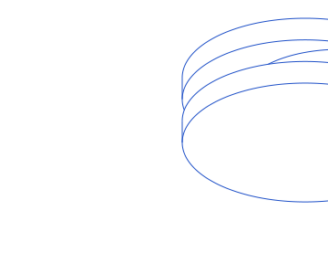
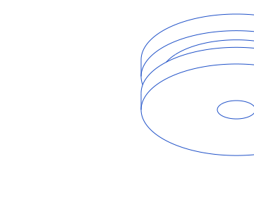

Millimetres, Z up. A vented lid. Plate: X from -40 to 40, Y from -25 to 25, Z from 0 to 2. Forty square vents, 4 by 4, go through it: a grid of 8 columns and 5 rows with centres at X = -28, -20, -12, -4, 4, 12, 20, 28 and Y = -16, -8, 0, 8, 16. Four 3 mm corner holes go through at (X, Y) = (±36, ±21).

Millimetres, Z up. An electronics enclosure, open at the top. Outside: X from -40 to 40, Y from -25 to 25, Z from 0 to 30; walls and floor 2 thick (hollow inside X from -38 to 38, Y from -23 to 23, Z from 2 to 30). Inside, four screw bosses stand on the floor: cylinders of diameter 6, Z from 2 to 27, centred at (X, Y) = (33, 18), (-33, 18), (-33, -18), (33, -18). Each boss has a 2.5 mm hole along its axis from Z = 2 to 27 (it does not go through the floor).



Millimetres, Z up. A grooved pulley on the Z axis. Cylinder: diameter 40, Z from 0 to 12. A rectangular groove runs all around it: between Z = 4 and Z = 8, material is removed from radius 16 out to the outside (radius 20). An 8 mm bore goes through along the Z axis.


